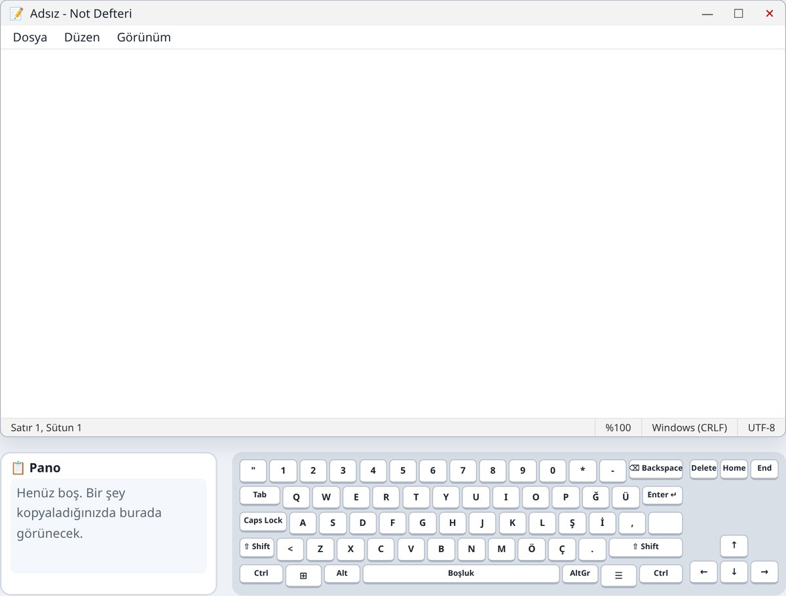
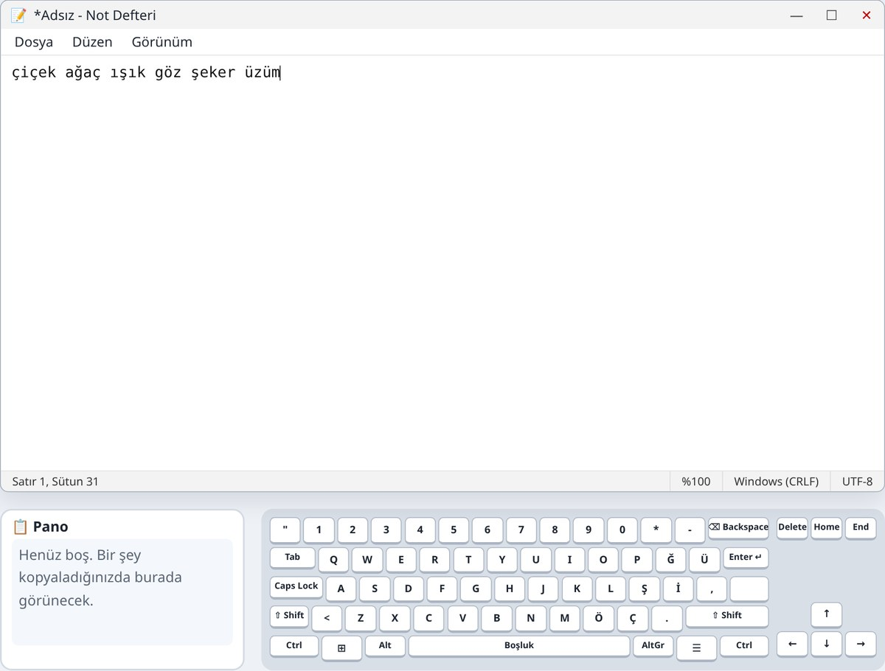
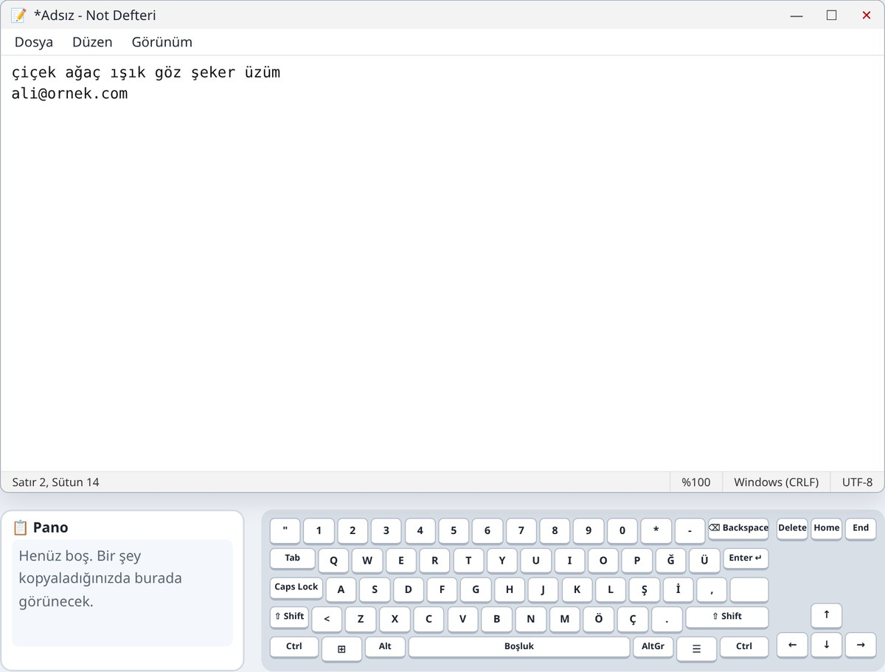

2. Hafta: Klavye
Alıştırmalar ve oyunlar
Bu hafta

Alıştırma 1
| elma | Not Defteri’ne tıklayıp harfleri yazın |
|---|---|
| elma armut | En alttaki uzun Boşluk tuşuyla araya boşluk |
| kiraz | Enter ↵ ile alt satıra geçip yazın |
İmleç, yanıp sönen ince çizgidir. Yazdığınız harfler imlecin olduğu yere gelir.
Alıştırma 2
Backspace geriye, Delete ileriye siler. Backspace imlecin solundaki, Delete sağındaki harfi siler.
Alıştırma 3
| ⇧ Shift + harf | Ali yazın: yalnızca A büyük. Shift’i basılı tutup A’ya basın, sonra bırakın. |
|---|---|
| Caps Lock | ANKARA yazın, Caps Lock’a bir kez daha basıp kapatın, yanına ankara yazın. |
Caps Lock açık kalırsa her şey büyük harf yazılır. Şifre yazarken buna dikkat edin.
Alıştırma 4
Türkçede İ ve I ayrı harflerdir; klavyede de ayrı tuşlardır.

Alıştırma 5
| Shift + 1 | ! (ünlem) |
|---|---|
| Shift + * | ? (soru işareti), sağ üstte 0’ın yanında |
| AltGr + Q | @ (et işareti): e-posta adresleri için |
Yazın: Nasılsın? Harika! ve ali@ornek.com
AltGr yoksa Ctrl ve Alt’ı birlikte basılı tutup Q’ya basmak da @ yazar.

Alıştırma 6
| ↑ ↓ ← → | İmleci harf harf, satır satır hareket ettirir. Dördüne de basın. |
|---|---|
| Home | İmleci satırın başına götürür. |
| End | İmleci satırın sonuna götürür. |
Fareye gerek kalmadan imleci istediğiniz yere götürebilirsiniz. Uzun satırlarda Home ve End çok zaman kazandırır.
Özet
| Boşluk | Kelimeler arasına boşluk |
|---|---|
| Enter | Alt satıra geç |
| ⌫ Backspace / Delete | İmlecin solundaki / sağındaki harfi siler |
| Shift + harf | Tek bir büyük harf |
| Caps Lock | Hepsi büyük harf (aç/kapat) |
| Shift+1 · Shift+* · AltGr+Q | ! · ? · @ |
| ↑ ↓ ← → · Home / End | İmleci hareket ettirir · satır başı / sonu |